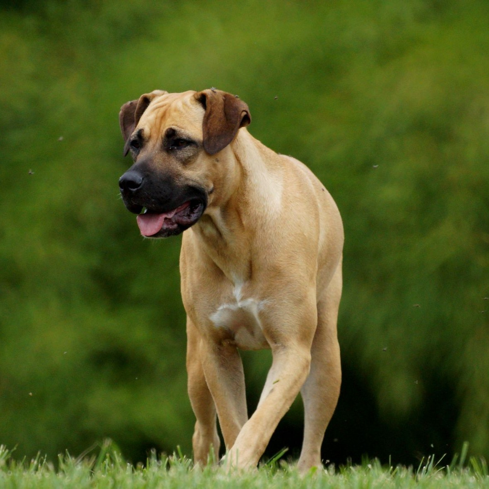
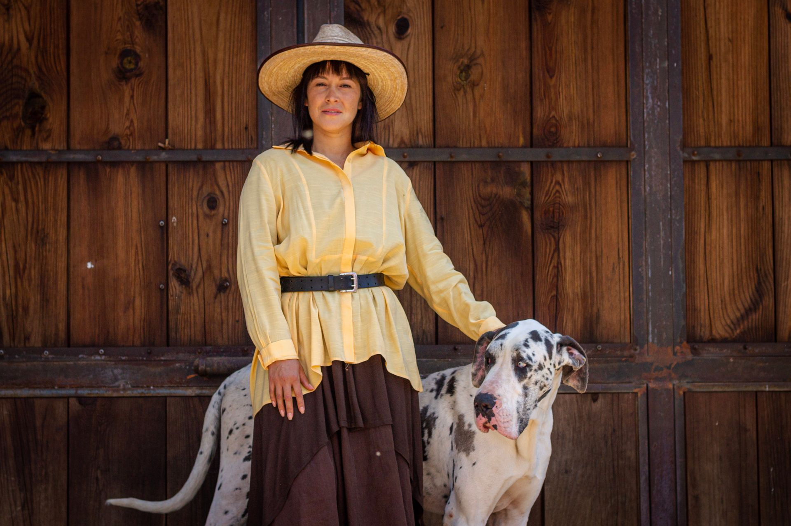
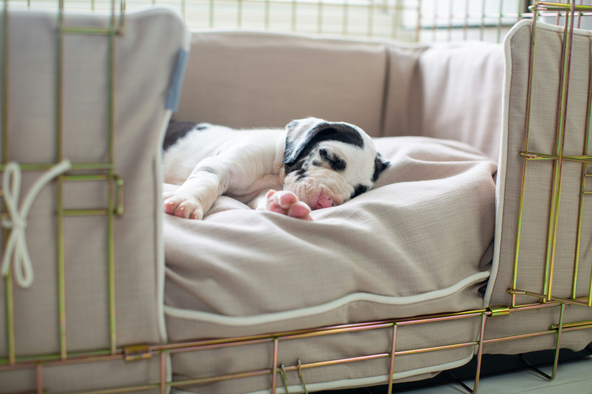
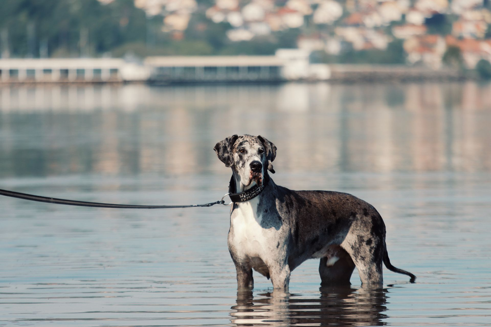

Немецкий дог
Самая высокая порода собак и настоящий нежный гигант. За внушительной статью дога скрывается спокойный, добродушный и удивительно деликатный характер.

- Вес
- 50–90 кг
- Рост в холке
- от 72–80 см
- Жизнь
- 7–8 лет
- Энергия
- Умеренная
- Линька
- Умеренная
Характер
Немецкий дог ведёт историю от старинных догообразных собак, которых в Европе веками держали для охоты на крупного зверя и охраны. В XIX веке немецкие заводчики решили собрать их лучшие черты в одной породе, и в 1880 году появился единый стандарт. Так родился дог в его нынешнем виде, в котором мощь и величие неожиданно сочетаются с мягкостью и душевным теплом, за что породу часто называют нежным гигантом.
При своих внушительных размерах дог на удивление спокоен и уравновешен. Это собака не суетливая и не шумная, она держится с достоинством и редко лает попусту. Дог глубоко привязывается к своей семье и буквально не мыслит себя вне её, тянется к людям и нуждается в близком общении, поэтому одиночество переносит тяжело. Несмотря на рост, в душе он часто остаётся ласковым ребёнком, который не прочь устроиться поближе к хозяину, словно не замечая собственных габаритов.
К детям дог терпелив и бережен, а его врождённое благородство делает его на редкость деликатным в общении. К незнакомцам относится со спокойным вниманием, без лишней подозрительности, но сама его внушительная стать служит надёжной защитой, так что грозным охранником ему быть и не нужно. С другими животными дог обычно уживается миролюбиво, особенно если растёт с ними вместе.
При всей величавости дог остаётся умной и понятливой собакой, которая хорошо чувствует настроение хозяина и охотно учится. Правда, спешки он не любит и делает всё в своём неторопливом, основательном темпе, поэтому в воспитании ценит спокойствие и доброжелательность. Раннее и мягкое обучение особенно важно, ведь такой крупной собаке нужно с детства усвоить хорошие манеры, и тогда рядом с человеком вырастает настоящий джентльмен с золотым сердцем.
Характеристики
Размер
Настоящий гигант, самая высокая порода в мире. Рост в холке от 72 до 80 сантиметров и выше, вес от 50 до 90 килограммов. Кобели заметно крупнее и массивнее сук.
Шерсть
Короткая, гладкая и плотная, с красивым блеском и без подшёрстка. В уходе очень проста, линяет умеренно, достаточно протирать собаку и изредка вычёсывать.
Энергия
Умеренная. Вопреки размеру, дог довольно спокоен и не требует изнурительных нагрузок. Ему достаточно неспешных прогулок и игр, а большую часть дня он с удовольствием проводит рядом с хозяином.
Обучаемость
Хорошая. Дог умён и отлично чувствует человека, но делает всё в своём неторопливом темпе и не терпит спешки. Раннее мягкое воспитание особенно важно для собаки такого размера.
Отношение к детям
Бережное и терпеливое. Дог деликатен с детьми и относится к ним с трогательной нежностью, охотно становясь спокойным и надёжным товарищем по играм.
Здоровье
Немецкий дог требует внимательного отношения к здоровью, как и все гигантские породы. Ответственные заводчики проверяют здоровье родителей, поэтому щенка лучше брать именно у них, а правильный уход помогает догу долго оставаться бодрым и активным.
Дисплазия суставов
Как у всех гигантских пород, тазобедренные и локтевые суставы испытывают большую нагрузку и могут развиваться не идеально. Проверка родителей, плавный рост щенка без перегрузок и поддержание стройной формы заметно берегут суставы.
Сердце
Крупным породам важно беречь сердце, и дог не исключение. Регулярные осмотры у ветеринара, умеренные нагрузки и качественный рацион помогают поддерживать его в хорошей форме на долгие годы.
Чувствительный живот
Большая глубокая грудь делает дога склонным к проблемам с пищеварением. Кормление небольшими порциями из приподнятой миски, спокойный отдых после еды и неспешный режим питания берегут его самочувствие.
Окрасы
Стандарт признаёт пять окрасов немецкого дога, и каждый по-своему хорош. Самый узнаваемый из них — мраморный, известный как арлекин.

Палевый идёт с чёрной маской, тигровый добавляет к нему чёрные полосы. Голубой — редкий стальной оттенок, а арлекин узнаётся по рваным чёрным пятнам на белом фоне.
Кому подходит
Немецкий дог подойдёт человеку, который мечтает о спокойном и величественном компаньоне и готов разделить дом с по-настоящему большой собакой. Несмотря на гигантский рост, дог не требует огромных нагрузок, и его уравновешенный нрав хорошо вписывается в размеренную домашнюю жизнь. Главное, чтобы у собаки было достаточно простора и место, где можно с комфортом вытянуться во весь свой внушительный размер.
Лучше всего догу живётся там, где он чувствует себя полноценным членом семьи и проводит много времени с близкими. Эта порода нежно привязывается к хозяину и плохо переносит одиночество, поэтому дог не подойдёт тем, кто подолгу отсутствует. Зато во внимательной и любящей семье он раскрывается как ласковый, преданный и удивительно деликатный друг.
Стоит учитывать и практическую сторону, ведь большая собака означает большие расходы на корм, простор в доме и заметную силу на поводке. Догу нужен спокойный и уверенный хозяин, способный с самого детства привить ему хорошие манеры. Но если вы готовы к жизни рядом с нежным гигантом, дог отблагодарит вас безграничной преданностью и тем особым теплом, которое дарят только собаки этой благородной породы.
Немецкий дог в жизни


